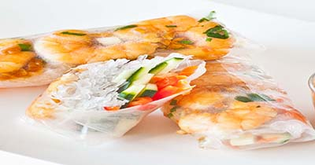

My Favorite Food
Vietnamese Spring Roll
This is the best traditional food

Ingredient
- Rice Paper
- Shrimp
- Lettuce
- Sprout
- Pork
- Vegetable
Direction
- Clean the vegetab
- Cook the shirmp and pork meat
- Make the sauce
- Roll them in the rice paper
For more information check out this site